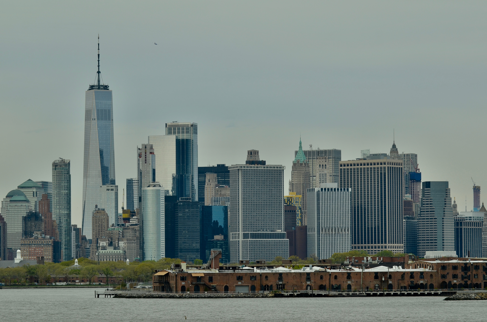
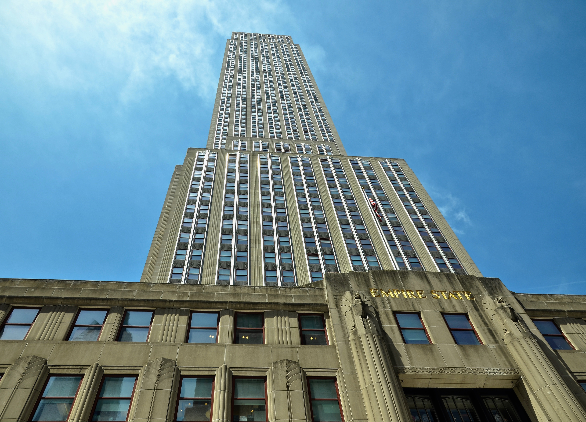
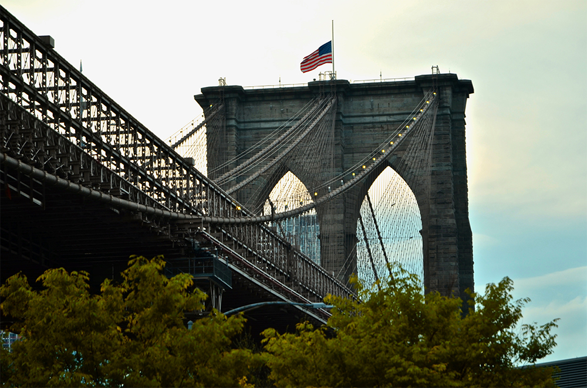
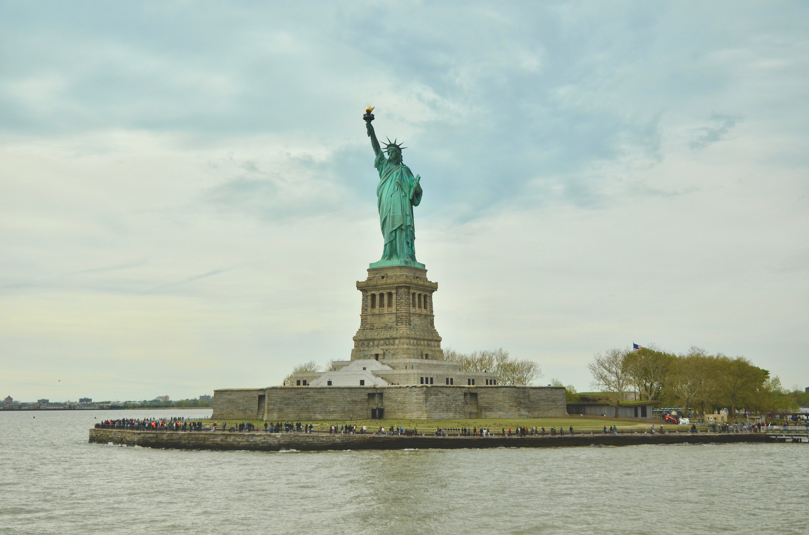
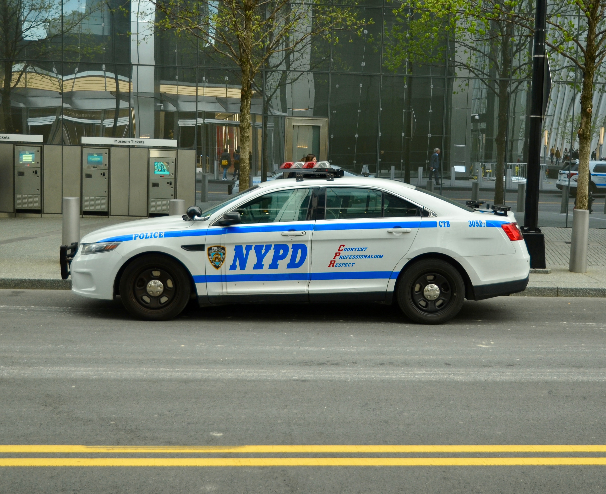

Eigene Erfahrungen
Im April 2019 war Davide in New York. Hier berichten wir von seinen interessantesten Erfahrungen.

World Trade Center
Das neu erbaute World Trade Center ist ein faszinierendes, herausragendes Gebäude im südlichsten Teil der Insel Manhattan...
Mehr lesen

Empire State Building
Auf meiner Reise durch New York City liess ich mir einen Besuch beim Empire State Building natürlich nicht entgehen...
Mehr lesen

Brooklyn Bridge
An dem Tag als ich die Brooklyn Bridge besuchte stand mir viel Zeit zur Verfügung. Nach einem wunderbaren Rundgang im südlichen Stadtteil...
Mehr lesen

Freiheitsstatue
Wenn man von New York spricht und über alle Sehenswürdigkeiten schwärmt darf man natürlich die Freiheitsstatue nicht vergessen...
Mehr lesen
